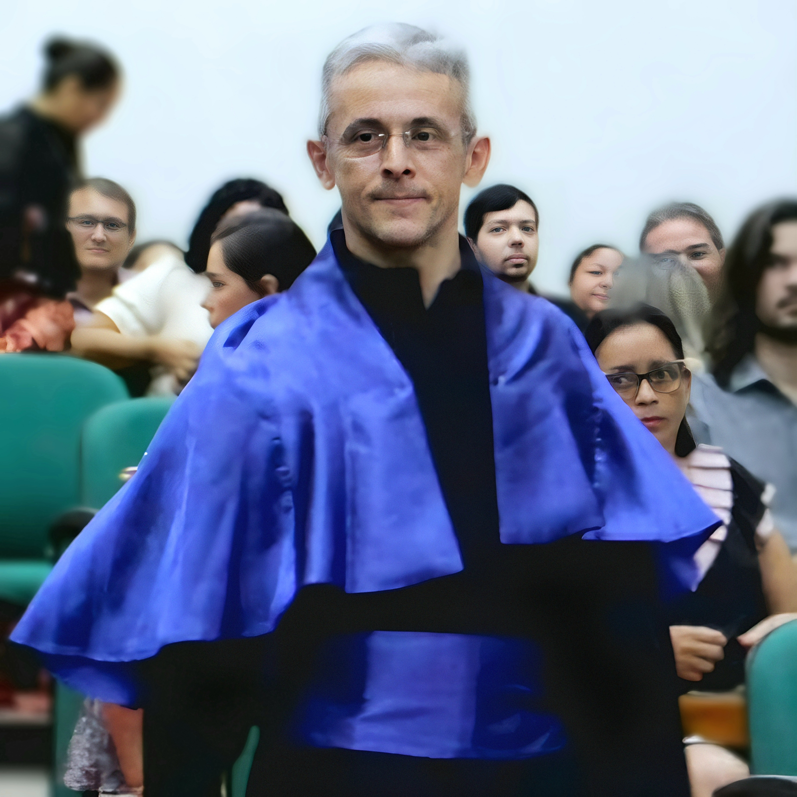
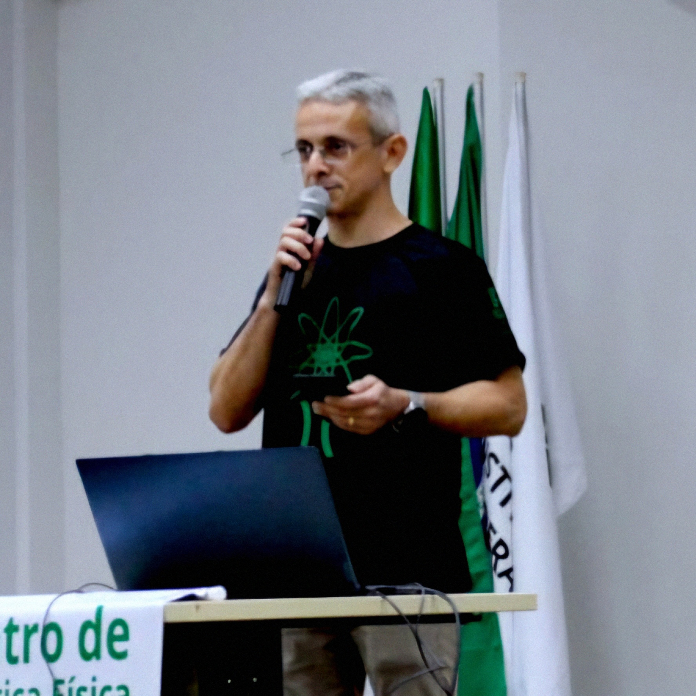
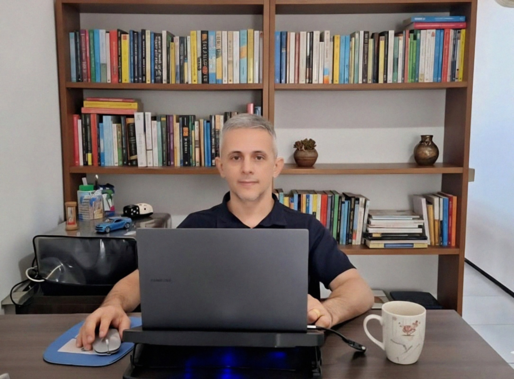

O Professor Ademir Lopes mudou-se para Maranguape aos 7 anos de idade, onde cursou o ensino fundamental e médio no Colégio São José. Durante a juventude, conciliou os estudos com a prática de futsal, defendendo equipes da cidade em competições estaduais.
Inicialmente, seu interesse era ser professor de Educação Física, mas a experiência de ministrar aulas particulares de Matemática em domicílio, iniciada em 2002, revelou sua aptidão para a docência na área de Exatas.


O Professor Ademir tem como principal hobby jogar Futsal, esporte que pratica desde a juventude e que o ajudou a desenvolver disciplina e trabalho em equipe.
Atualmente, o Professor Ademir ministra disciplinas nos cursos Técnico Integrado em Informática e Licenciatura em Matemática do IFCE Campus Maranguape.
Ocupa a função de Chefe de Departamento de Ensino, sendo algumas das atribuições: